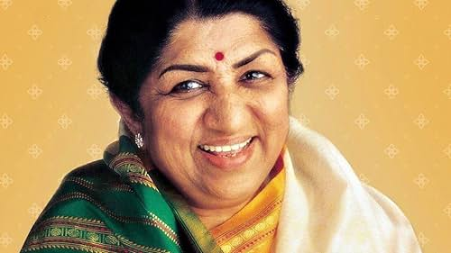

Lata Mangeshkar Tribute
Legendary Indian playback singer
About the Legend
☛ Lata Mangeshkar, born on September 28, 1929, in Indore, India, was a legendary Indian playback singer known for her melodious voice and versatility.
☛ She began her career in playback singing in 1942 and has since mesmerized audiences with her exceptional talent.
☛ Lata Mangeshkar has lent her voice to thousands of songs in various languages including Hindi, Marathi, Bengali, and more.
☛ Her contributions to Indian music are unparalleled, earning her numerous awards and honors including the Bharat Ratna, India's highest civilian award.
☛ Lata Mangeshkar's melodious voice continues to inspire generations of singers and music lovers around the world.
☛ She passed away on February 6, 2022, leaving behind a legacy that will forever be remembered in the history of Indian music.
For more information, check out Lata Mangeshkar on Wikipedia.